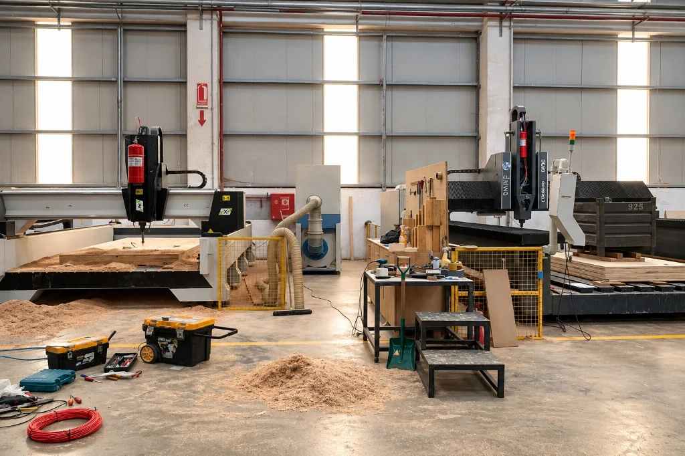

Aerosol Gazlı Yangın Söndürme Sistemleri
Endüstriyel ekipmanlar, teknik hacimler, jeneratör kabinleri ve araç yangın koruması için borulama ve basınçlı silindir gerektirmeyen kompakt aerosol söndürme çözümleri.
Potasyum bazlı katı kimyasal bileşiğin kontrollü reaksiyonla mikronize katı partiküllere dönüşerek alev zincirleme reaksiyonunu kimyasal olarak kırması prensibiyle çalışan modüler ve yerleşik yangın söndürme teknolojisi.

Aerosol Yangın Söndürme Sistemi Nedir?
Aerosol gazlı yangın söndürme sistemleri (kondanse aerosol sistemleri); geleneksel gazlı sistemlerdeki yüksek basınçlı silindir bataryaları, kollektör manifoldları ve dağıtım boru tesisatına ihtiyaç duymadan, doğrudan korunan hacim içerisine monte edilen jeneratör üniteleriyle yangını baskılayan modern bir yangın koruma teknolojisidir.
Sistem, katı kimyasal blok halinde jeneratör içinde depolanan söndürücü ajanın, elektriksel darbe veya ortam sıcaklığına duyarlı termal mekanizma ile tetiklenmesi sonucu saniyeler içerisinde yoğun bir mikronize katı partikül bulutuna ve inert taşıyıcı gazlara dönüşmesi prensibine dayanır. Bu partiküller alev bölgesine hızla yayılarak yangının sürmesini sağlayan kimyasal zincir reaksiyonunu moleküler düzeyde kırar.
Uluslararası alanda ISO 15779, EN 15276 ve NFPA 2010 standartları kapsamında tanımlanan kondanse aerosol sistemleri; ortamdaki oksijeni tüketmeyerek (oksijen deplasmanı yapmadan) alevin kimyasal yapısını etkisiz hale getirmesi ve basınçsız depolanması sayesinde özellikle dar, bölünmüş ve mekanik tesisat montajının zor olduğu özel tehlike alanlarında kompakt bir alternatif sunar.
Aerosol Sistem Nasıl Çalışır?
Aerosol yangın söndürme sistemlerinin çalışma mekanizması, dört ardışık ve doğrulanabilir temel adımdan meydana gelir:
Aerosol Jeneratörü
Söndürücü bileşik, basınca maruz kalmayan paslanmaz çelik veya korumalı metal kanister gövdesi içinde katı blok halinde güvenle muhafaza edilir.
Tetikleme Mekanizması
Yangın algılama panelinden iletilen elektriksel akım darbesiyle veya mekanik sıcaklık algılayıcı/fitil ile jeneratör içindeki başlatıcı aktive edilir.
Ajanın Oluşumu ve Yayılımı
Kontrollü iç reaksiyon sonucu katı bileşik hızla mikron altı boyutta katı tuz partikülleri ve taşıyıcı inert gazlardan oluşan yoğun aerosol bulutuna dönüşerek ortama püskürtülür.
Yanma Reaksiyonuna Müdahale
Serbest potasyum radikalleri alevdeki hidroksil (OH) ve hidrojen (H) köklerini bağlayarak yanmanın zincir reaksiyonunu kimyasal olarak kırar ve soğutma sağlar.
Teknik Ayrım: Kondanse aerosol sistemleri, yangını oksijen konsantrasyonunu boğucu seviyelere (%15 altına) düşürerek değil; alevin kimyasal zincirini doğrudan durdurarak söndürür. Bununla birlikte her üreticinin kimyasal bileşim oranı, soğutma blok malzemesi ve deşarj dinamikleri farklılık gösterebileceğinden, sistem tek ve evrensel bir şablon yerine üretici onaylı teknik tasarım verileri ve standartlar doğrultusunda ele alınmalıdır.
Aerosol Sistemlerinin Temel Bileşenleri
Aerosol yangın söndürme sistemleri, karmaşık boru ve vana şebekeleri yerine entegre çalışan doğrulanmış temel donanımlardan oluşur:
1. Kondanse Aerosol Jeneratörü
İçerisinde katı söndürücü blok, kimyasal reaksiyonu dengeleyen soğutucu katman ve koruyucu çelik kanister gövdesini barındıran temel söndürme ünitesidir.
2. Elektriksel Aktüatör (Başlatıcı)
Yangın söndürme kontrol panelinden gelen 24V DC elektriksel darbe ile jeneratör içindeki katı kimyasal bloğu kontrollü şekilde ateşleyen hassas başlatıcı elemandır.
3. Termal Aktivasyon Donanımı
Elektrik enerjisinin bulunmadığı veya yedek otonom koruma hedeflenen noktalarda belirli sıcaklık eşiğinde jeneratörü kendiliğinden aktive eden termal fitil veya sensördür.
4. Algılama ve Söndürme Paneli
Çapraz zon mantığıyla duman ve ısı dedektörlerinden gelen sinyalleri değerlendiren, tahliye gecikmesini ve deşarj komutunu yöneten onaylı kontrol ünitesidir.
5. Yangına Dayanıklı Hat Kabloları
Olası yangın koşullarında elektriksel aktüatörlere iletilen tetikleme akımının kesintiye uğramamasını güvence altına alan özel yangına dayanıklı kablo altyapısıdır.
6. Sesli ve Işıklı Tahliye İkazları
Deşarj öncesinde personeli uyaran, tahliye geri sayımını duyuran ve mahale giriş yapılmaması gerektiğini bildiren kombine flaşörlü sirenler ve uyarı tabelalarıdır.
Aerosol Sistemleri Nerelerde Kullanılır?
Aerosol söndürme teknolojisi, özellikle boru şebekesi tesis etmenin fiziksel veya ekonomik açıdan mümkün olmadığı kapalı hacimlerde ve özel tehlike noktalarında uygulanır:
Endüstriyel Hacimler ve Tesisler
Üretim tesislerindeki izole proses hücreleri, yanıcı madde depolama dolapları ve mekanik tesisat borulaması yapılamayan kapalı endüstriyel kabinler.
Teknik Ekipman ve Makineler
CNC işleme merkezleri, endüstriyel kompresör kabinleri, hidrolik güç üniteleri ve elektrik motoru muhafazaları içerisindeki yerel koruma alanları.
Uygun Elektrik ve Enerji Riskleri
Kablo kanalları, tünel galerileri, şalt dolapları ve uygun kapasitedeki transformatör hücreleri (elektriksel iletkenlik taşımayan kuru partikül yapısı ile).
Jeneratör ve Güç Odaları
Dizel jeneratör konteynerleri, ses izolasyon kabinleri ve bağımsız güç istasyonlarında yüksek sıcaklık ve titreşime dayanıklı koruma düzeni.
Ticari ve Endüstriyel Araçlar
Otobüs, kamyon, iş makinesi, maden araçları ve deniz taşıtlarının motor kabinleri, bagaj bölümleri ve teknik ekipman kompartımanları.
Rüzgar Türbinleri ve Telekom
Uzak mesafeli rüzgar türbini naselleri, baz istasyonu teknik kabinleri ve erişimi güç kırsal haberleşme istasyonları.
Mühendislik Kapsam Notu
Aerosol sistemleri "her ortam ve risk için sınırsızca uygun" bir çözüm değildir. Geniş açıklıklara sahip yapılar, sürekli personel barındıran ofisler veya deşarj sonrası toz partikülü temizliğine kesinlikle izin vermeyen hassas optik laboratuvar ortamlarında standartlara uygun risk analizi yapılarak alternatif temiz gazlı sistemler değerlendirilmelidir.
Aerosol Sistemlerinin Avantajları ve Tasarım Sınırları
Doğru yangın mühendisliği kararı alabilmek için aerosol sistemlerinin sağladığı avantajlar ile uygulama sınırlarının objektif biçimde bilinmesi gerekir:
Teknik Avantajlar
- ✓ Borulamasız Kolay Kurulum: Karmaşık hidrolik boru hesaplamaları, çelik çekme borular ve dağıtım nozulları gerektirmez. Jeneratör doğrudan hacme sabitlenir.
- ✓ Basınçsız Depolama: Kanister üniteleri basınç altında bulunmaz; bu sayede hidrostatik basınçlı kap testleri ve basınç kaçağı riskleri söz konusu değildir.
- ✓ Kompakt ve Hafif Yapı: Ayrı bir silindir depolama odasına ihtiyaç duymaksızın en dar motor kabinlerinde veya pano içlerinde dahi yer tasarrufu sağlar.
- ✓ Çevresel Uyumluluk: Ozon tüketme potansiyeli (ODP) ve küresel ısınma potansiyeli (GWP) sıfırdır; çevre mevzuatlarına uygundur.
- ✓ Modüler Esneklik: Hacmin büyüklüğüne göre birden fazla jeneratör tek bir elektriksel tetikleme hattı üzerinden senkron çalıştırılabilir.
Tasarım Sınırları ve Önlemler
- ⚠ Deşarj Sonrası Partikül Tortusu: Aerosol deşarjı sonrasında yüzeylerde ince tuz tozu tabakası çöker; müdahale sonrası mekanik temizlik (vakum/silme) gerektirir.
- ⚠ Termal Emniyet Mesafesi: Jeneratör nozul çıkışında yüksek sıcaklık oluşur; yanıcı malzemelere ve kablolara karşı üretici onaylı minimum güvenlik mesafesi korunmalıdır.
- ⚠ Görüş Kısıtlılığı ve Tahliye İhtiyacı: Deşarj anında oluşan yoğun sis ortam görüşünü düşürür; sürekli insan bulunan alanlarda personelin tahliyesi için ön gecikme şarttır.
- ⚠ Mahal Tutma Süresi ve Sızdırmazlık: Boru olmasa da hacmin sızdırmazlığı sağlanmalı, havalandırma otomatik kapatılarak aerosolün ortamda tutulması temin edilmelidir.
Objektif Güvenlik Standardı
Mühendislik etiğimiz gereği aerosol sistemlerini "tamamen sıfır hasarlı", "%100 tehlikesiz" veya "hiçbir bakım gerektirmeyen" mutlak ifadelerle sunmuyoruz. Aerosol sistemleri, doğru hacimde doğru projelendirildiğinde olağanüstü verimli bir koruma sağlamakla beraber; elektrik devresi süreklilik testleri, montaj güvenliği ve deşarj sonrası temizlik süreçleri periyodik mühendislik disiplini gerektirir.
Aerosol ve Diğer Gazlı Söndürme Sistemleri Arasındaki Fark
Fenix Yangın olarak uyguladığımız söndürme sistemleri arasında doğru seçimi yapabilmeniz için temel teknik karşılaştırma kriterleri:
FM200 Gazlı Söndürme
Temiz GazBasınçlı çelik silindirlerde depolanan HFC-227ea gazı, boru şebekesi üzerinden boşalarak ortamda sıfır kalıntı bırakır. İnsan bulunan server odaları ve veri merkezleri için standart çözümdür.
FM200 Sistemini İncele →Novec 1230 Söndürme
FK-5-1-12Çevre dostu yeni nesil temiz gaz çözümü. GWP değeri 1'den küçük, atmosferik ömrü günler mertebesindedir. Arşiv, müze ve yüksek değerli BT merkezlerinde tercih edilir.
Novec 1230 Sistemini İncele →CO₂ Gazlı Söndürme
Boğucu GazOksijeni tüketerek fiziksel boğma sağlayan yüksek etkili endüstriyel gaz. Asfiksi (boğulma) riski nedeniyle sürekli insan bulunan alanlarda kullanılmaz; trafolarda ve makine dairelerinde uygulanır.
CO₂ Sistemini İncele →| Kriter | Aerosol Sistemleri | FM200 / Novec 1230 | CO₂ (Karbondioksit) |
|---|---|---|---|
| Depolama Biçimi | Basınçsız katı kanister | Basınçlı sıvılaştırılmış gaz (25–42 bar) | Yüksek basınçlı gaz (50–60 bar) |
| Boru Tesisatı | Gerektirmez (Doğrudan montaj) | Hidrolik çelik boru şebekesi şart | Yüksek basınçlı çelik boru şebekesi şart |
| Deşarj Sonrası Durum | İnce kuru toz tortusu (Temizlik gerekir) | Tamamen buharlaşır (Sıfır kalıntı) | Tamamen buharlaşır (Sıfır kalıntı) |
| Söndürme Mekanizması | Kimyasal alev zincir kırma + soğutma | Isı emilimi (Soğutma) + kimyasal etki | Oksijen seviyesini boğma (%15 altı) |
| Öncelikli Kullanım Alanı | Araç motorları, izole kabinler, panolar | Veri merkezleri, BT odaları, arşivler | Trafo odaları, jeneratörler, şalt sahaları |
Araç Yangın Söndürme Uygulamaları
Fenix Yangın kataloğunda yer alan araç yangın söndürme sistemleri, hareket halindeki ve zorlu arazi koşullarında çalışan ticari, endüstriyel ve özel amaçlı araçlar için özel olarak projelendirilir:
Motor Bölgesi Koruması
Yüksek çalışma sıcaklığı, kızgın egzoz manifoldları, yakıt ve hidrolik hatlarının kesiştiği motor kompartımanında hızlı algılama ve odaklı aerosol deşarjı sağlar.
Mutfak Bölümü Koruması
Karavanlar, mobil catering araçları ve VIP servis minibüslerinde pişirme ekipmanları ve tüp/gaz tesisatı barındıran mutfak hacimlerinde özel yangın koruması sunar.
Bagaj ve Yük Bölmeleri
Otobüs ve ticari araçların bagaj kompartımanlarında, yardımcı ısıtıcı (webasto) çevrelerinde ve elektrik bağlantı kutularında güvenli kapsama sağlar.
Ayrı Bölgeler İçin Bölgesel Algılama
Araç üzerindeki motor, mutfak veya bagaj gibi farklı tehlike bölgeleri bağımsız zonlar halinde izlenir; yalnızca yangının başladığı bölgeye müdahale edilir.
Manuel veya Otomatik Müdahale
Sürücü kabininde yer alan acil durum çalıştırma butonuyla manuel olarak veya doğrusal ısı algılama hattı ile tam otomatik olarak anında aktive edilebilir.
Alarm ve Çoklu Jeneratör Entegrasyonu
Araç gösterge paneline sesli ve ışıklı ikaz iletir; geniş hacimli araç motorlarında birden fazla aerosol ünitesi tek bir tetikleme hattı üzerinden koordineli çalışır.
Elektrikli Araç (EV) ve Lityum Batarya Yangınları Ayrımı
Araç yangın söndürme sistemleri, geleneksel içten yanmalı motor kompartımanları ve kabin riskleri için geliştirilmiştir. Elektrikli araçlar (EV) ve lityum iyon batarya paketlerinde meydana gelen yangınlar, hücre içi termal kaçak (thermal runaway) mekanizması nedeniyle kendine özgü soğutma ve sürekli baskılama stratejileri gerektirir. Bu nedenle konvansiyonel aerosol sistemleri ile lityum iyon batarya yangın söndürme çözümleri birbirine eşitlenmemeli, her risk kendi uzmanlık sayfasında değerlendirilmelidir.
Sistem Seçimi ve Projelendirme
Aerosol söndürme sistemlerinin başarısı, korunacak hacmin ve tehlike sınıfının doğru analiz edilerek jeneratör kapasitesinin standartlara göre hesaplanmasına bağlıdır:
Korunacak Hacim ve Geometri
Odanın veya kabinin net hacmi ($m^3$) hesaplanır; yapısal engeller ve tavan yükseklikleri dikkate alınarak jeneratörlerin yayılım alanı belirlenir.
Yangın Tehlike Sınıfı ve Tasarım Yoğunluğu
A (katı), B (sıvı) veya C (gaz/elektrik) yangın sınıflarına göre ISO 15779 ve EN 15276 standartlarında belirtilen gramaj/hacim ($g/m^3$) faktörleri esas alınır.
Havalandırma ve Tutma Süresi (Hold-Time)
Deşarj anında havalandırma damperlerinin otomatik kapatılması ve aerosol bulutunun yeniden alevlenmeyi önleyecek süre boyunca ortamda kalması sağlanır.
Fenix Mühendislik Yaklaşımı
Tesisiniz için aerosol projelendirmesi yapılırken jeneratör deşarj yönü, kritik ekipmanlara olan güvenlik mesafeleri, kablo bağlantı hatlarının elektriksel sürekliliği ve acil durum tahliye protokolleri bir bütün olarak ele alınır.
Şirketimizce onaylı olmayan veya standart dışı hesaplama formülleri kullanılmaz; her proje uluslararası normlara ve üreticinin sertifikalı tasarım kılavuzlarına harfiyen uygun olarak tanzim edilir.
Aerosol Sistemleri Fiyatları
Aerosol gazlı yangın söndürme sistemlerinin maliyetleri; korunacak hacmin özelliklerine ve sistem altyapısına göre proje bazında belirlenir:
Oda, kabin veya ekipman muhafazasının metreküp cinsinden net büyüklüğü.
Yangın risk sınıfına göre gereken katı söndürücü ajan kütlesi ve kanister adedi.
Bağımsız otonom termal aktivasyon hattı veya çift zonlu elektronik kontrol paneli.
Sabit endüstriyel kabin, bina içi teknik oda veya titreşime maruz kalan araç ortamı.
Projeniz İçin Teknik Keşif ve Fiyat Teklifi Alın
Endüstriyel tesisleriniz, makine kabinleriniz veya araç filonuz için yangın tehlike analizini gerçekleştiriyor, standartlara uygun en doğru aerosol jeneratör konfigürasyonuyla anahtar teslim teklif hazırlıyoruz.
Keşif ve Fiyat Teklifi AlınSık Sorulan Sorular
Aerosol gazlı yangın söndürme sistemleri hakkında müşterilerimiz ve teknik sorumlular tarafından en sık sorulan soruların yanıtları.
Aerosol yangın söndürme sistemi; katı haldeki kimyasal bileşiğin elektriksel veya termal aktivasyonla kontrollü bir reaksiyona girerek mikronize katı partiküller ve taşıyıcı gazlardan oluşan yoğun bir söndürücü aerosol bulutuna dönüşmesi prensibiyle çalışan kompakt bir yangın koruma teknolojisidir. Basınçlı tüp ve boru dağıtım şebekesi gerektirmeden yerinde monte edilen jeneratör üniteleriyle uygulanır.
Aerosol sistem; algılama panelinden gelen elektriksel tetikleme veya otonom termal aktivasyon ile devreye girer. Jeneratör içerisindeki katı bileşik aktive olduğunda potasyum bazlı mikro partiküller ortama salınır. Bu partiküller alev bölgesindeki serbest radikallerle (H ve OH) kimyasal reaksiyona girerek yanma zincirini moleküler seviyede kesintiye uğratır ve yangını oksijen seviyesini boğucu oranlara düşürmeden kontrol altına alır.
Aerosol sistemleri; borulama ve silindir alanı imkanı kısıtlı olan elektrik kablo galerileri, dağıtım panoları, jeneratör ve makine kabinleri, CNC tezgahları, endüstriyel proses bölmeleri ile ticari araç ve iş makinelerinin motor veya teknik hacimlerinde tercih edilir. Geniş açık alanlar veya sürekli insan bulunan ofis hacimleri için uygun bir genel çözüm değildir.
FM200 ve CO₂ sistemleri; basınçlı çelik silindirlerde depolanan, boru ve nozul şebekesi üzerinden odaya boşaltılan gazlı sistemlerdir. FM200 kalıntı bırakmayan bir temiz gaz iken, CO₂ yüksek oksijen boğma gücüne sahiptir. Aerosol sistemleri ise basınçsız kanister ünitelerinden oluşur, boru tesisatı gerektirmez; ancak deşarj sonrasında yüzeylerde ince toz tortusu bıraktığı için mekanik temizlik gerektirir.
Evet. Aerosol jeneratörleri kompakt ve titreşime dayanıklı yapıları sayesinde otobüs, kamyon, iş makinesi ve özel araçların motor bölmesi, bagaj ve mutfak hacimlerinde güvenle kullanılabilir. Sistemler bağımsız zon algılama, kabin içi manuel buton veya otomatik termal tetikleme ve araç alarm paneli entegrasyonuyla projelendirilir.
Aerosol sistemi fiyatlandırması; korunacak hacmin metreküp cinsinden büyüklüğüne, yangın tehlike sınıfına, gereken aerosol jeneratörü adedine ve gramajına, tetikleme altyapısına (otonom termal hat veya algılama panelli elektriksel sistem) ve montaj şartlarına göre mühendislik keşfi sonrasında proje bazında belirlenir.
İlgili Yangın Söndürme Sistemleri
Fenix Yangın bünyesinde endüstriyel tesisler, binalar ve özel tehlike alanları için sunduğumuz diğer mühendislik çözümleri:
İnsan bulunan sistem ve sunucu odaları için kalıntısız temiz gazlı söndürme.
Sistemi İncele →Çevre dostu FK-5-1-12 temiz gazlı yangın söndürme sistemleri.
Sistemi İncele →Trafo ve jeneratör odaları için yüksek etkili karbondioksitli söndürme.
Sistemi İncele →Elektrik ve otomasyon panoları için noktasal mikro gazlı söndürme.
Sistemi İncele →Endüstriyel mutfak pişirme hatları için otomatik söndürme sistemleri.
Sistemi İncele →Door Fan testi ile gaz ve aerosol tutma süresinin standart doğrulaması.
Hizmeti İncele →Aerosol Yangın Söndürme Sistemi Teklifi Alın
Endüstriyel kabin, jeneratör odası veya araç uygulamanız için teknik keşif ve anahtar teslim aerosol projelendirme teklifi hazırlıyoruz.